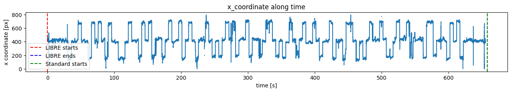
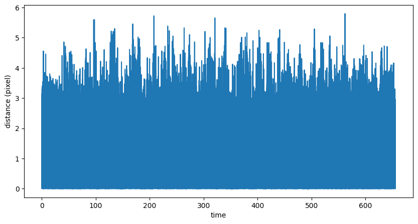
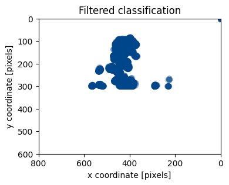
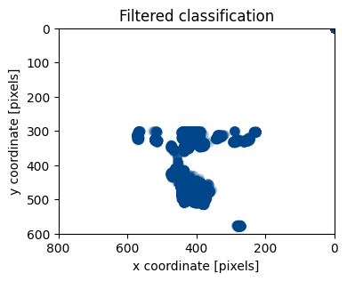
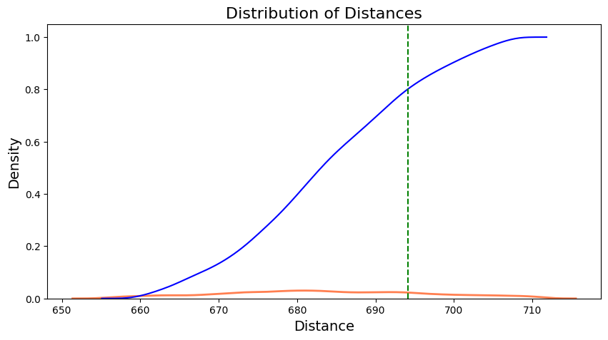
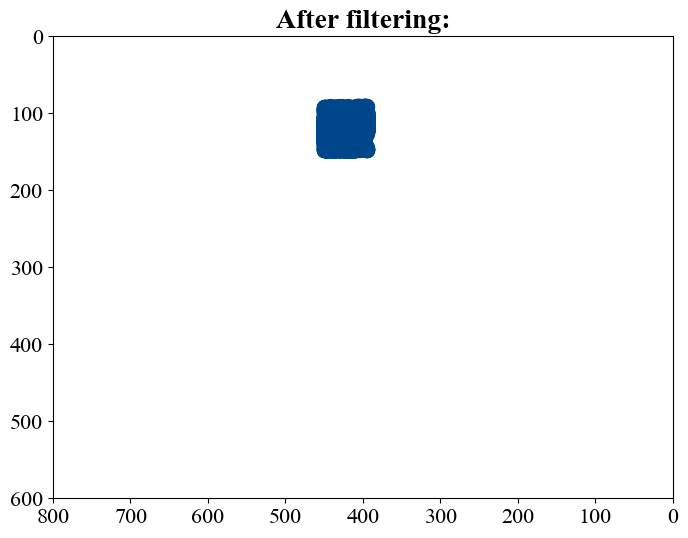
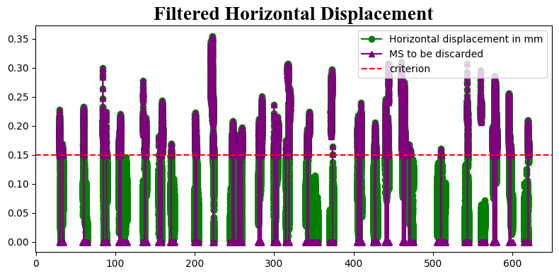
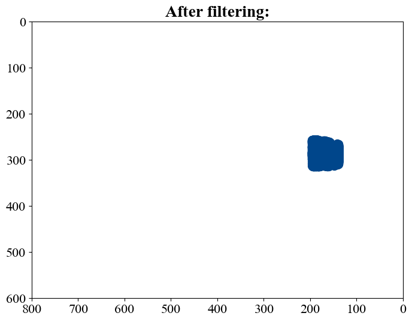
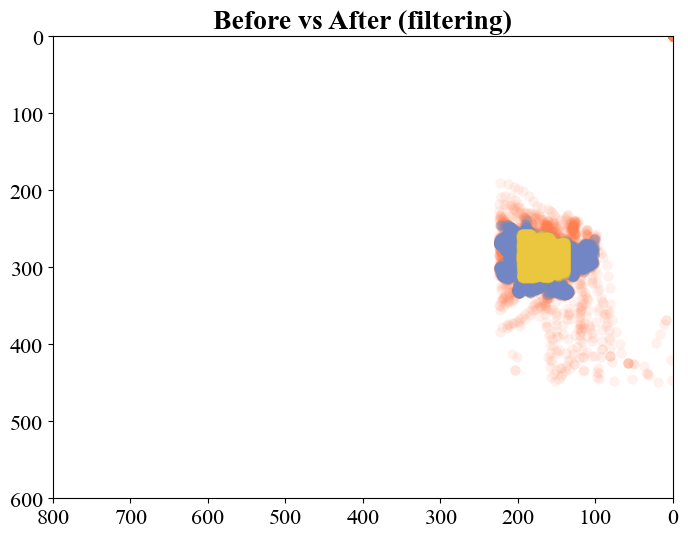

Derived from: https://www.axonlab.org/hcph-sops/data-management/eyetrack-qc/
Author: Yiwei Jia
In this notebook, we delve into eye-tracking data analysis, focusing specifically on the MREye_track project. The project involves visual stimuli appearing in different directions: up, down, left, right and center. Within this notebook, we inspect the eye-tracking signals, determine regions of interest (ROIs) corresponding to each stimulus, and generate eye-tracking (ET) masks. Additionally, we calculate the distance distribution between two adjacent gaze points and also analyze that of specific time windows of eye-tracking data.
# Derived from:
# https://www.axonlab.org/hcph-sops/data-management/eyetrack-qc
# Load the autoreload extension
%load_ext autoreload
# Set autoreload to update the modules every time before executing a new line of code
%autoreload 2
%matplotlib inline
from pathlib import Path
import json
import ppjson
from importlib import reload # For debugging purposes
import numpy as np
import pandas as pd
import eyetrackingrun as et
from IPython.display import HTML
from matplotlib import animation
from matplotlib.animation import FuncAnimation, PillowWriter
import matplotlib.image as mpimg
import matplotlib.pyplot as plt
import copy
from write_bids_yiwei import EyeTrackingRun, write_bids, write_bids_from_df
The autoreload extension is already loaded. To reload it, use:
%reload_ext autoreload
subject_idx = 1
T_idx = 1
if T_idx == 1:
mode = 'T1'
else:
mode = 'T2'
BIDS_PATH = Path("/Users/cag/Documents/Dataset/MREyeTrack/EDF")
if subject_idx == 1:
FILE_NAME = f"000001_fixed_dot-16_grid_T1w_2024-10-14_17h24"
elif subject_idx == 2:
FILE_NAME = f"000002_fixed_dot-16_grid_T1w_2024-10-14_16h54"
elif subject_idx == 3:
FILE_NAME = f"000003_fixed_dot-16_grid_T1w_2024-10-14_16h35"
# "OT4.EDF"
else:
FILE_NAME = f""
# D:\Eye_Dataset\Sub001\230928_anatomical_MREYE_study\ET_EDF
session = "001" #can be a string to be defined when required
tsv_name = f"{FILE_NAME}.tsv.gz"
gif_name = f'{FILE_NAME}.gif'
# Read in tsv.gz file
# Naming convention can be modified later
# recording_file = BIDS_PATH / "sub-001" / f"ses-{session}" / "dwi" / f"sub-001_ses-{session}_acq-highres_dir-RL_recording-eyetrack_physio.tsv.gz"
recording_file = BIDS_PATH / tsv_name
print(f'recording_file: {recording_file}')
recording = pd.read_csv(
recording_file,
# sep=r"\s+",
sep="\t",
na_values="n/a",
)
recording.head()
print(f'recording len: {len(recording)}')
metadata = json.loads((
recording_file.parent
/ recording_file.name.replace(".tsv.gz", ".json")
).read_text())
# print(f'meta_data: {metadata}')
print('The duration of mri acquisition sub001 sub002 and sub003: 655240 ms')
recording_file: /Users/cag/Documents/Dataset/MREyeTrack/EDF/000001_fixed_dot-16_grid_T1w_2024-10-14_17h24.tsv.gz
recording len: 657900
The duration of mri acquisition sub001 sub002 and sub003: 655240 ms
1 Metadata and calibration¶
We always run a calibration before it is started. As a result, we will typically see the metadata corresponding to calibration on this particular run.
Now, let's print out the contents of the BIDS' sidecar JSON corresponding to the DWI in this session.
target_message = "ET: Start routine 'centered_dot'"
target_timestamp = 0
for index, element in enumerate(metadata['LoggedMessages']):
if element[1] == target_message:
print(f"First occurrence is at index {index}: {element}")
target_timestamp = element[0]
print(f"at timestamp {target_timestamp}")
break
gap_start_dot = target_timestamp - metadata['StartTime']
# Here I don't consider the lag between start and the first stimuli anymore
# Start time = first trigger
# gap_start_dot = 0
print(f"Timestamp to start recording: {metadata['StartTime']}")
print(f'From the start of recording to the first dot: {gap_start_dot}')
First occurrence is at index 27: [15155843, "ET: Start routine 'centered_dot'"]
at timestamp 15155843
Timestamp to start recording: 15155345
From the start of recording to the first dot: 498
if subject_idx == 1:
print(recording[655335:655338])
# 655336 timestamp 15810681
# From there it became NaN
Unnamed: 0 eye1_x_coordinate eye1_y_coordinate eye1_pupil_size \
655335 655335 443.899994 471.299988 1594.0
655336 655336 443.899994 471.299988 1594.0
655337 655337 NaN NaN NaN
eye1_pupil_x_coordinate eye1_pupil_y_coordinate \
655335 -5161.0 -2741.0
655336 -5161.0 -2741.0
655337 -32768.0 -32768.0
eye1_href_x_coordinate eye1_href_y_coordinate fast_href_x_velocity \
655335 434.0 1691.0 -1.946136e+14
655336 434.0 1691.0 -1.946136e+14
655337 -7936.0 -7936.0 -1.946136e+14
fast_raw_x_velocity screen_ppdeg_x_coordinate \
655335 2.161728e+20 26.700001
655336 2.161728e+20 26.700001
655337 2.161728e+20 26.700001
screen_ppdeg_y_coordinate timestamp eye1_fixation eye1_saccade \
655335 26.799999 15810680 0 1
655336 26.799999 15810681 0 1
655337 26.799999 15810682 0 1
eye1_blink
655335 1
655336 1
655337 1
t_axis = (
recording.timestamp.values - recording.timestamp[0]
) / metadata["SamplingFrequency"]*1000
print(f"The end of the timestamp: {t_axis[-1]}")
The end of the timestamp: 657899.0
print(metadata["Columns"])
recording = recording.rename(
columns={
f"eye1_pupil_size": f"pupil_size",
f"eye1_fixation": f"fixation",
f"eye1_saccade": f"saccade",
f"eye1_blink": f"blink",
f"eye1_x_coordinate": f"x_coordinate",
f"eye1_y_coordinate": f"y_coordinate"
}
)
metadata["Columns"] = recording.columns.tolist()
print(metadata["Columns"])
['eye1_x_coordinate', 'eye1_y_coordinate', 'eye1_pupil_size', 'eye1_pupil_x_coordinate', 'eye1_pupil_y_coordinate', 'eye1_href_x_coordinate', 'eye1_href_y_coordinate', 'fast_href_x_velocity', 'fast_raw_x_velocity', 'screen_ppdeg_x_coordinate', 'screen_ppdeg_y_coordinate', 'timestamp', 'eye1_fixation', 'eye1_saccade', 'eye1_blink']
['Unnamed: 0', 'x_coordinate', 'y_coordinate', 'pupil_size', 'eye1_pupil_x_coordinate', 'eye1_pupil_y_coordinate', 'eye1_href_x_coordinate', 'eye1_href_y_coordinate', 'fast_href_x_velocity', 'fast_raw_x_velocity', 'screen_ppdeg_x_coordinate', 'screen_ppdeg_y_coordinate', 'timestamp', 'fixation', 'saccade', 'blink']
Index(['Unnamed: 0', 'x_coordinate', 'y_coordinate', 'pupil_size',
'eye1_pupil_x_coordinate', 'eye1_pupil_y_coordinate',
'eye1_href_x_coordinate', 'eye1_href_y_coordinate',
'fast_href_x_velocity', 'fast_raw_x_velocity',
'screen_ppdeg_x_coordinate', 'screen_ppdeg_y_coordinate', 'timestamp',
'fixation', 'saccade', 'blink'],
dtype='object')
plot_pupil_saccade = False
if plot_pupil_saccade:
fig = plt.figure(figsize=(16, 2))
plt.plot(
t_axis,
recording["pupil_size"].values,
)
plt.plot(
t_axis,
recording["saccade"].values * 5000,
)
plt.xlabel("time [s]")
plt.ylabel("pupil area [a.u.]")
plt.xlim((200, 220))
plt.title('Pupil area and saccading')
print(f'At this time, since blinking is detected, we cannot get clear pupil area ?')
plot_x_saccade = False
if plot_x_saccade:
fig = plt.figure(figsize=(16, 2))
plt.plot(
t_axis,
recording["x_coordinate"].values,
)
plt.plot(
t_axis,
recording["saccade"].values * 1000,
)
plt.xlim((200, 220))
Check fixation
plot_fixation = False
if plot_fixation:
# Fixation
fig = plt.figure(figsize=(16, 2))
plt.plot(
t_axis,
recording["x_coordinate"].values,
)
plt.plot(
t_axis,
recording["fixation"].values * 500,
)
plt.xlim((340, 350))
plt.title('X coordinate of gazing with fixation')
fig = plt.figure(figsize=(16, 2))
plt.plot(
t_axis,
recording["y_coordinate"].values,
)
plt.plot(
t_axis,
recording["fixation"].values * 500,
)
plt.xlim((340, 350))
plt.title('Y coordinate of gazing with fixation')
The analysis did not reveal a strong correlation between pupil size and saccade or fixation events.
The coordinate sequence is stable during fixation, we should extract the data in the event.
2 Data Cleaning¶
- Separate the two phases of sequences
- Extract the X Y coordinates
- Eliminate the blinking and non-fixation area of LIBRE data, and keep the raw data of STANDARD.Because there is no mechanism for the second STANDARD one to correct the eye fixation.
- Design some criteria for cleaning the noise data
- Visual angle
- Heat maps
- Fixation algorithm (literature review)
2.1 Separate the two phases of sequences¶
# -----------------------------
reset_index_bool = False
eliminate_all_nan = False
eliminate_first_nan = False
# -----------------------------
size = (
metadata["ScreenAOIDefinition"][1][1],
metadata["ScreenAOIDefinition"][1][3],
)
coor_data = recording[["x_coordinate", "y_coordinate"]]
print(f"Extract X Y coordinates from recording: {len(coor_data)}")
if eliminate_all_nan:
coor_data = coor_data[coor_data.x_coordinate.notna() & coor_data.y_coordinate.notna()]
coor_recording = recording[recording.x_coordinate.notna() & recording.y_coordinate.notna()]
elif eliminate_first_nan:
# Find the first non-NaN row
first_valid_index = coor_data[['x_coordinate', 'y_coordinate']].dropna(how='all').index[0]
# Slice the DataFrame from the first non-NaN row onward
coor_data = coor_data.iloc[first_valid_index:]
coor_recording = recording.iloc[first_valid_index:]
else:
coor_recording = recording
if reset_index_bool:
coor_data.reset_index(drop=True, inplace=True)
coor_recording.reset_index(drop=True, inplace=True)
print(coor_data)
print(f"Eliminating nan values? {eliminate_first_nan}: {len(coor_data)}")
print(f'len of coor_data {len(coor_data)} should be equal to len of coor_recording {len(coor_recording)}')
Extract X Y coordinates from recording: 657900
x_coordinate y_coordinate
0 466.899994 279.200012
1 466.899994 279.899994
2 466.899994 279.799988
3 465.500000 280.399994
4 464.100006 281.000000
... ... ...
657895 NaN NaN
657896 NaN NaN
657897 NaN NaN
657898 NaN NaN
657899 NaN NaN
[657900 rows x 2 columns]
Eliminating nan values? False: 657900
len of coor_data 657900 should be equal to len of coor_recording 657900
# Duration setting according to the protocol (in sec) not any more
# Duration setting according to the raw data info
T1_LIBRE = (len(coor_data))/metadata['SamplingFrequency']
T1_GAP = 0
T1_VIBE = 0
print(f"The length of T1_LIBRE Subject{subject_idx} should be: {T1_LIBRE} sec (len(coor_data)-gap_start_dot)")
The length of T1_LIBRE Subject1 should be: 657.9 sec (len(coor_data)-gap_start_dot)
start_margin = 0
if mode == 'T1':
print(f'mode: {mode}')
print(f"set start margin as {start_margin}")
T1_LIBRE_sample = T1_LIBRE*metadata['SamplingFrequency']
T1_GAP_sample = T1_GAP*metadata['SamplingFrequency']
T1_VIBE = len(coor_data) - T1_LIBRE_sample - T1_GAP_sample
else:
print(f'mode: {mode}')
print(f"set start margin as {start_margin}")
T2_LIBRE_sample = T2_LIBRE*metadata['SamplingFrequency']
T2_GAP_sample = T2_GAP*metadata['SamplingFrequency']
T2_TSE = len(coor_data) - T2_LIBRE_sample - T2_GAP_sample
t_axis_xy = (
coor_data.index
) / metadata["SamplingFrequency"]
# x coordinate
fig = plt.figure(figsize=(16, 2))
plt.plot(
t_axis_xy,
coor_data["x_coordinate"].values,
)
if mode == 'T1':
plt.axvline(x=start_margin/metadata["SamplingFrequency"], color='r', linestyle='--', label='LIBRE starts')
plt.axvline(x=(T1_LIBRE_sample+start_margin)/metadata["SamplingFrequency"], color='b', linestyle='--', label='LIBRE ends')
plt.axvline(x=(T1_LIBRE_sample+start_margin+T1_GAP_sample)/metadata["SamplingFrequency"], color='g',
linestyle='--', label='Standard starts')
else:
plt.axvline(x=start_margin/metadata["SamplingFrequency"], color='r', linestyle='--', label='LIBRE starts')
plt.axvline(x=(T2_LIBRE_sample+start_margin)/metadata["SamplingFrequency"], color='b', linestyle='--', label='LIBRE ends')
plt.axvline(x=(T2_LIBRE_sample+start_margin+T2_GAP_sample)/metadata["SamplingFrequency"], color='g',
linestyle='--', label='Standard starts')
plt.title("x_coordinate along time")
plt.xlabel("time [s]")
plt.ylabel("x coordinate [px]")
plt.legend()
# y coordinate
fig = plt.figure(figsize=(16, 2))
plt.plot(
t_axis_xy,
coor_data["y_coordinate"].values,
)
plt.axvline(x=start_margin/metadata["SamplingFrequency"], color='r', linestyle='--', label='LIBRE starts')
plt.axvline(x=(T1_LIBRE_sample+start_margin)/ metadata["SamplingFrequency"], color='b', linestyle='--', label='LIBRE ends')
plt.axvline(x=(T1_LIBRE_sample+start_margin+T1_GAP_sample)/metadata["SamplingFrequency"], color='g',
linestyle='--', label='Standard starts')
plt.title("y_coordinate along time")
plt.xlabel("time [s]")
plt.ylabel("y coordinate [px]")
plt.legend()
coor_data_LIBRE = coor_data[start_margin:int(T1_LIBRE_sample)+start_margin]
coor_recording_LIBRE = coor_recording[start_margin:int(T1_LIBRE_sample)+start_margin]
coor_data_LIBRE_raw = copy.deepcopy(coor_data_LIBRE)
print(len(coor_data_LIBRE))
mode: T1
set start margin as 0
657900


# import scipy.io
# coor_array = coor_data_LIBRE[['x_coordinate', 'y_coordinate']].to_numpy()
# scipy.io.savemat(f'coor_data_raw_t1w_libre_sub00{subject_idx}.mat', {'coordinates': coor_array})
2.2 Eliminating blinking¶
use_eliminate_blink = True
def eliminate_blink(coor_data, coor_recording, seq_name):
# coor_data = coor_data[coor_recording.blink < 1]
# coor_recording = coor_recording[coor_recording.blink < 1]
# Note: instead of filtering them out, I assign nan to the invalid elements
print(f'The data will be eliminated: {len(coor_data[coor_recording.blink > 0])}')
coor_data.loc[coor_recording.blink > 0, ['x_coordinate', 'y_coordinate']] = np.nan
coor_recording.loc[coor_recording.blink > 0, ['x_coordinate', 'y_coordinate']] = np.nan
print(f'After eliminating blinking: \nlen of coor_data_{seq_name} {len(coor_data)} \
should be equal to len of coor_recording {len(coor_recording)}')
return coor_data, coor_recording
if use_eliminate_blink:
coor_data_LIBRE, coor_recording_LIBRE = eliminate_blink(coor_data_LIBRE, coor_recording_LIBRE, 'LIBRE')
# coor_data_STANDARD, coor_recording_STANDARD = eliminate_blink(coor_data_STANDARD,
# coor_recording_STANDARD, 'STANDARD')
plot_heatmap = False
if plot_heatmap:
import plot
plot.plot_heatmap_coordinate(coor_data_LIBRE, density=False, screen_size=size,
title='LIBRE: The gaze from the beginning to the end')
plot.plot_heatmap_coordinate(coor_data_STANDARD, density=False, screen_size=size,
title='STANDARD: The gaze from the beginning to the end')
The data will be eliminated: 11775
After eliminating blinking:
len of coor_data_LIBRE 657900 should be equal to len of coor_recording 657900
2.3 Preserving fixation¶
use_preserve_fixation = True
def preserve_fixation(coor_data, coor_recording, seq_name):
# coor_data = coor_data[coor_recording.fixation > 0]
# coor_recording = coor_recording[coor_recording.fixation > 0]
print(f'The data will be eliminated: {len(coor_data[coor_recording.fixation < 1])}')
coor_data.loc[coor_recording.fixation < 1, ['x_coordinate', 'y_coordinate']] = np.nan
coor_recording.loc[coor_recording.fixation < 1, ['x_coordinate', 'y_coordinate']] = np.nan
print(f'After preserving fixation: \nlen of coor_data_{seq_name} {len(coor_data)} \
should be equal to len of coor_recording {len(coor_recording)}')
return coor_data, coor_recording
if use_preserve_fixation:
coor_data_LIBRE, coor_recording_LIBRE = preserve_fixation(coor_data_LIBRE, coor_recording_LIBRE, 'LIBRE')
# coor_data_STANDARD, coor_recording_STANDARD = preserve_fixation(coor_data_STANDARD,
# coor_recording_STANDARD, 'STANDARD')
plot_heatmap = False
if plot_heatmap:
import plot
plot.plot_heatmap_coordinate(coor_data_LIBRE, density=False, screen_size=size,
title='LIBRE: The gaze from the beginning to the end')
plot.plot_heatmap_coordinate(coor_data_STANDARD, density=False, screen_size=size,
title='STANDARD: The gaze from the beginning to the end')
The data will be eliminated: 30428
After preserving fixation:
len of coor_data_LIBRE 657900 should be equal to len of coor_recording 657900
2.4 Plot the gazing dots¶
# Example data (replace with your actual data)
X_coord = coor_data_LIBRE_raw['x_coordinate']
Y_coord = coor_data_LIBRE_raw['y_coordinate']
fig, ax= plt.subplots(figsize=(8, 6))
# Plot the data, flipping X coordinates and using dots as markers
plt.scatter(X_coord, Y_coord, s=50, c='#00468b', alpha=0.1, edgecolors='#00468b', linewidth=0.5)
plt.xlim((0, 800))
plt.ylim((0, 600))
# Set plot title
plt.title('LIBRE: Before filtering')
plt.xlabel('x coordinate [pixels]')
plt.ylabel('y coordinate [pixels]')
# Reverse the direction of the Y-axis
plt.gca().invert_yaxis()
plt.gca().invert_xaxis()
# ============================================================
# Example data (replace with your actual data)
X_coord = coor_data_LIBRE['x_coordinate']
Y_coord = coor_data_LIBRE['y_coordinate']
fig, ax= plt.subplots(figsize=(8, 6))
# Plot the data, flipping X coordinates and using dots as markers
plt.scatter(X_coord, Y_coord, s=50, c='#00468b', alpha=0.1, edgecolors='#00468b', linewidth=0.5)
plt.xlim((0, 800))
plt.ylim((0, 600))
# Set plot title
plt.title('LIBRE: After Filtering')
plt.xlabel('x coordinate [pixels]')
plt.ylabel('y coordinate [pixels]')
# Reverse the direction of the Y-axis
plt.gca().invert_yaxis()
plt.gca().invert_xaxis()
# ============================================================


By far, we initially cleaned data based on the inherent properties in the metadata from EyeLink. And we plotted the fixation evaluation.
2.5 Visualize gaze groups¶
def within_2d_range(x_vals, y_vals, x_range, y_range):
return np.sum((x_vals >= x_range[0]) & (x_vals <= x_range[1]) &
(y_vals >= y_range[0]) & (y_vals <= y_range[1]))
def label_correction(labels, counts, intervals):
interval_len = len(labels)
if intervals == 5000:
intervals = [intervals]*interval_len
print(intervals)
print(f'len of intervals {interval_len} in label_correction')
corrected_labels = []
for i, label in enumerate(labels):
if (label=='center') & (i>5) & (i<interval_len-1-5):
label='invalid'
print(f'index-{i}: label corrected, at this time there is no center stimulus ')
if counts[i]<intervals[i]/2:
label='invalid'
print(f'index-{i}: label corrected, count of valid points is less than half of interval')
corrected_labels.append(label)
return corrected_labels
Subjects saccaded from one position to another need a short delay, so the actual gaze points are not necessarily aligned with the stimuli occurring. We need to adjust a bit or tolerate such delay.
Classification
# More detailed classification
# play with the timestamp and the first fixation point -> finer subject delay.
metadata['LoggedMessages']
dot_message_1 = "ET: Start routine 'centered_dot'"
dot_message_2 = "ET: Start routine 'dots'"
dot_message_3 = 'ET: dot moved!'
dot_message = []
for index, element in enumerate(metadata['LoggedMessages']):
if (element[1] == dot_message_1) or (element[1] == dot_message_2) or (element[1] == dot_message_3):
dot_message.append(element)
print(f'total length: {len(dot_message)}')
start_timestamp = metadata['StartTime']
first_dot_timestamp = dot_message[0][0]
dot_message = [[timestamp - start_timestamp, msg] for timestamp, msg in dot_message]
# dot_message = [[timestamp, msg] for timestamp, msg in dot_message]
print('Shifted')
print(dot_message[-1])
print(dot_message)
total length: 131
Shifted
[651901, "ET: Start routine 'centered_dot'"]
[[498, "ET: Start routine 'centered_dot'"], [5489, "ET: Start routine 'centered_dot'"], [10489, "ET: Start routine 'centered_dot'"], [15490, "ET: Start routine 'centered_dot'"], [20506, "ET: Start routine 'centered_dot'"], [25506, "ET: Start routine 'centered_dot'"], [30506, "ET: Start routine 'dots'"], [35506, 'ET: dot moved!'], [40507, 'ET: dot moved!'], [45524, 'ET: dot moved!'], [50540, "ET: Start routine 'dots'"], [55557, 'ET: dot moved!'], [60573, 'ET: dot moved!'], [65574, 'ET: dot moved!'], [70590, "ET: Start routine 'dots'"], [75606, 'ET: dot moved!'], [80607, 'ET: dot moved!'], [85623, 'ET: dot moved!'], [90624, "ET: Start routine 'dots'"], [95640, 'ET: dot moved!'], [100657, 'ET: dot moved!'], [105658, 'ET: dot moved!'], [110677, "ET: Start routine 'dots'"], [115691, 'ET: dot moved!'], [120707, 'ET: dot moved!'], [125708, 'ET: dot moved!'], [130709, "ET: Start routine 'dots'"], [135725, 'ET: dot moved!'], [140743, 'ET: dot moved!'], [145758, 'ET: dot moved!'], [150776, "ET: Start routine 'dots'"], [155791, 'ET: dot moved!'], [160808, 'ET: dot moved!'], [165809, 'ET: dot moved!'], [170825, "ET: Start routine 'dots'"], [175841, 'ET: dot moved!'], [180842, 'ET: dot moved!'], [185859, 'ET: dot moved!'], [190876, "ET: Start routine 'dots'"], [195893, 'ET: dot moved!'], [200908, 'ET: dot moved!'], [205909, 'ET: dot moved!'], [210926, "ET: Start routine 'dots'"], [215927, 'ET: dot moved!'], [220942, 'ET: dot moved!'], [225944, 'ET: dot moved!'], [230960, "ET: Start routine 'dots'"], [235976, 'ET: dot moved!'], [240977, 'ET: dot moved!'], [245992, 'ET: dot moved!'], [250994, "ET: Start routine 'dots'"], [256010, 'ET: dot moved!'], [261028, 'ET: dot moved!'], [266043, 'ET: dot moved!'], [271061, "ET: Start routine 'dots'"], [276077, 'ET: dot moved!'], [281077, 'ET: dot moved!'], [286094, 'ET: dot moved!'], [291111, "ET: Start routine 'dots'"], [296127, 'ET: dot moved!'], [301127, 'ET: dot moved!'], [306144, 'ET: dot moved!'], [311145, "ET: Start routine 'dots'"], [316161, 'ET: dot moved!'], [321161, 'ET: dot moved!'], [326178, 'ET: dot moved!'], [331179, "ET: Start routine 'dots'"], [336195, 'ET: dot moved!'], [341211, 'ET: dot moved!'], [346228, 'ET: dot moved!'], [351229, "ET: Start routine 'dots'"], [356245, 'ET: dot moved!'], [361245, 'ET: dot moved!'], [366245, 'ET: dot moved!'], [371264, "ET: Start routine 'dots'"], [376278, 'ET: dot moved!'], [381295, 'ET: dot moved!'], [386296, 'ET: dot moved!'], [391313, "ET: Start routine 'dots'"], [396330, 'ET: dot moved!'], [401346, 'ET: dot moved!'], [406363, 'ET: dot moved!'], [411380, "ET: Start routine 'dots'"], [416396, 'ET: dot moved!'], [421413, 'ET: dot moved!'], [426415, 'ET: dot moved!'], [431431, "ET: Start routine 'dots'"], [436446, 'ET: dot moved!'], [441447, 'ET: dot moved!'], [446447, 'ET: dot moved!'], [451464, "ET: Start routine 'dots'"], [456480, 'ET: dot moved!'], [461497, 'ET: dot moved!'], [466514, 'ET: dot moved!'], [471531, "ET: Start routine 'dots'"], [476547, 'ET: dot moved!'], [481564, 'ET: dot moved!'], [486564, 'ET: dot moved!'], [491581, "ET: Start routine 'dots'"], [496597, 'ET: dot moved!'], [501598, 'ET: dot moved!'], [506614, 'ET: dot moved!'], [511632, "ET: Start routine 'dots'"], [516647, 'ET: dot moved!'], [521648, 'ET: dot moved!'], [526665, 'ET: dot moved!'], [531681, "ET: Start routine 'dots'"], [536698, 'ET: dot moved!'], [541715, 'ET: dot moved!'], [546715, 'ET: dot moved!'], [551716, "ET: Start routine 'dots'"], [556732, 'ET: dot moved!'], [561749, 'ET: dot moved!'], [566765, 'ET: dot moved!'], [571766, "ET: Start routine 'dots'"], [576782, 'ET: dot moved!'], [581782, 'ET: dot moved!'], [586798, 'ET: dot moved!'], [591800, "ET: Start routine 'dots'"], [596816, 'ET: dot moved!'], [601832, 'ET: dot moved!'], [606834, 'ET: dot moved!'], [611837, "ET: Start routine 'dots'"], [616850, 'ET: dot moved!'], [621866, 'ET: dot moved!'], [626883, 'ET: dot moved!'], [631902, "ET: Start routine 'centered_dot'"], [636901, "ET: Start routine 'centered_dot'"], [641902, "ET: Start routine 'centered_dot'"], [646901, "ET: Start routine 'centered_dot'"], [651901, "ET: Start routine 'centered_dot'"]]
def classify_gaze_region_v2(X_coord, Y_coord, dot_message, sb_delay=0, display=False):
from collections import Counter
time_len = len(X_coord)
print(f'time length: {len(X_coord)}')
# label the dot position
x_left_range = [600,800]
x_right_range = [0, 200]
x_center_range = [300, 500]
y_up_range = [0, 200]
y_down_range = [400, 600]
y_center_range = [200, 400]
labels = []
counts = []
if dot_message == []:
interval = 5000
default_range = range(sb_delay, int(time_len), interval)
time_range = default_range
print('default time range')
intervals = [interval] * len(default_range)
else:
print(f'len of dot messages {len(dot_message)}')
dot_time_range = [item[0]+sb_delay for item in dot_message]
time_range = dot_time_range
time_range.append(dot_time_range[-1])
print('time range with ET message')
# Extract the time values (first elements of each pair)
time_values = [item[0] for item in dot_message]
# Compute the time intervals
intervals = [time_values[i] - time_values[i - 1] for i in range(1, len(time_values))]
intervals.append(5000)
print(f'Before appending: time duration of intervals: {sum(intervals)}')
for i in range(10):
if len(intervals) != len(time_range):
intervals.append(5000)
print('append +1 interval')
else:
break
print("Time Intervals:", intervals)
print(f'len of intervals: {len(intervals)}')
print(f'length of time_range {len(time_range)}')
for start_time, interval in zip(time_range, intervals):
end_time = start_time + interval
x_interval = X_coord[start_time:end_time]
y_interval = Y_coord[start_time:end_time]
# Calculate counts for each region
left_count = within_2d_range(x_interval, y_interval, x_left_range, y_center_range)
right_count = within_2d_range(x_interval, y_interval, x_right_range, y_center_range)
center_count = within_2d_range(x_interval, y_interval, x_center_range, y_center_range)
up_count = within_2d_range(x_interval, y_interval, x_center_range, y_up_range)
down_count = within_2d_range(x_interval, y_interval, x_center_range, y_down_range)
region_counts = {
'left': left_count,
'right': right_count,
'center': center_count,
'up': up_count,
'down': down_count,
}
max_label, max_count = max(region_counts.items(), key=lambda item: item[1])
# Append the result
if max_count > 0:
labels.append(max_label)
counts.append(max_count)
else:
labels.append('unknown')
counts.append(0)
if display:
for i, label in enumerate(labels):
print(f'Interval {i}-{(i+1)}: {label} -> {counts[i]}')
return labels, counts, intervals
import json
X_coord = coor_data_LIBRE['x_coordinate']
Y_coord = coor_data_LIBRE['y_coordinate']
labels,counts, intervals = classify_gaze_region_v2(X_coord, Y_coord, dot_message, sb_delay=0, display=False)
with open(f'./labels/labels_subj_00{subject_idx}.json', 'w') as file:
json.dump(labels, file)
corr_labels = label_correction(labels, counts, intervals)
with open(f'./labels/corrected_labels_subj_00{subject_idx}.json', 'w') as file:
json.dump(corr_labels, file)
sb_delay = 0
num_rows=33
num_cols=4
fig, axes = plt.subplots(num_rows, num_cols, figsize=(4*(num_cols+1), 3*(num_rows+1)))
axes = axes.flatten()
invalid_indices = [i for i, element in enumerate(corr_labels) if element == "invalid"]
print(invalid_indices)
for i, ax in enumerate(axes):
if i<len(dot_message):
x = X_coord[dot_message[i][0]+sb_delay:dot_message[i][0]+sb_delay+intervals[i]]
y = Y_coord[dot_message[i][0]+sb_delay:dot_message[i][0]+sb_delay+intervals[i]]
else:
x = X_coord[dot_message[-1][0]+sb_delay+intervals[-1]:]
y = Y_coord[dot_message[-1][0]+sb_delay+intervals[-1]:]
if i in invalid_indices:
ax.scatter(x, y, c='coral', alpha=0.1, edgecolors='coral')
else:
ax.scatter(x, y, c='#00468b', alpha=0.1, edgecolors='#00468b')
ax.set_title(f'{i}-{i+1}: {corr_labels[i]} -> {counts[i]}')
ax.set_xlim([0, 800])
ax.set_ylim([0, 600])
ax.invert_xaxis()
ax.invert_yaxis()
plt.tight_layout()
plt.show()
time length: 657900
len of dot messages 131
time range with ET message
Before appending: time duration of intervals: 656403
append +1 interval
Time Intervals: [4991, 5000, 5001, 5016, 5000, 5000, 5000, 5001, 5017, 5016, 5017, 5016, 5001, 5016, 5016, 5001, 5016, 5001, 5016, 5017, 5001, 5019, 5014, 5016, 5001, 5001, 5016, 5018, 5015, 5018, 5015, 5017, 5001, 5016, 5016, 5001, 5017, 5017, 5017, 5015, 5001, 5017, 5001, 5015, 5002, 5016, 5016, 5001, 5015, 5002, 5016, 5018, 5015, 5018, 5016, 5000, 5017, 5017, 5016, 5000, 5017, 5001, 5016, 5000, 5017, 5001, 5016, 5016, 5017, 5001, 5016, 5000, 5000, 5019, 5014, 5017, 5001, 5017, 5017, 5016, 5017, 5017, 5016, 5017, 5002, 5016, 5015, 5001, 5000, 5017, 5016, 5017, 5017, 5017, 5016, 5017, 5000, 5017, 5016, 5001, 5016, 5018, 5015, 5001, 5017, 5016, 5017, 5017, 5000, 5001, 5016, 5017, 5016, 5001, 5016, 5000, 5016, 5002, 5016, 5016, 5002, 5003, 5013, 5016, 5017, 5019, 4999, 5001, 4999, 5000, 5000, 5000]
len of intervals: 132
length of time_range 132
len of intervals 132 in label_correction
index-74: label corrected, count of valid points is less than half of interval
index-91: label corrected, at this time there is no center stimulus
index-109: label corrected, count of valid points is less than half of interval
index-115: label corrected, count of valid points is less than half of interval
[74, 91, 109, 115]
def cal_diff_distance(x_coord, y_coord):
# Calculate differences
# * 81.3 / 176
# * 62 / 137
dx = np.diff(x_coord) # Difference in x
dy = np.diff(y_coord) # Difference in y
# Check for NaN values, ravel() is the must
nan_mask = (
np.isnan(x_coord[:-1]).ravel() |
np.isnan(x_coord[1:]).ravel() |
np.isnan(y_coord[:-1]).ravel() |
np.isnan(y_coord[1:]).ravel()
)
# Calculate Euclidean distances
distances = np.sqrt(dx**2 + dy**2)
# Apply NaN mask
distances[nan_mask] = np.nan
return distances
def cal_diff_sum_window(x_coord, y_coord, window_size=7):
# Calculate differences
# * 81.3 / 176
# * 62 / 137
distances = cal_diff_distance(x_coord, y_coord)
half_window = window_size // 2
# Create an empty array to store the sum of each window
window_sums = []
for i in range(len(x_coord)):
# Get the start and end indices of the window
start_idx = max(0, i - half_window)
end_idx = min(len(distances), i + half_window + 1)
# Slice the array and calculate the sum of the window
window_sum = np.nansum(distances[start_idx:end_idx])
# Append the window sum to the result list
window_sums.append(window_sum)
# Convert the list of sums to a numpy array for easier manipulation
window_sums = np.array(window_sums)
return window_sums
def calculate_max_pairwise_distance(x_coord, y_coord):
"""
Calculate the maximum Euclidean distance between each pair of coordinates.
Args:
coords (numpy.ndarray): An array of shape (n, 2), where n is the number of coordinates,
and each row contains (x, y) coordinates.
Returns:
float: The maximum distance between any pair of coordinates.
"""
coords = np.column_stack((x_coord, y_coord))
diffs = coords[:, np.newaxis, :] - coords[np.newaxis, :, :] # Shape (n, n, 2)
# Compute Euclidean distances for all pairs
distances = np.sqrt(np.nansum(diffs**2, axis=-1)) # Shape (n, n)
# Find the maximum distance
max_distance = np.nanmax(distances)
return max_distance
def cal_max_distance_window(x_coord, y_coord, window_size=7):
from tqdm import tqdm
half_window = window_size // 2
# Create an empty array to store the sum of each window
window_max_array = []
for i in tqdm(range(len(x_coord)), desc="Processing"):
# Get the start and end indices of the window
start_idx = max(0, i - half_window)
end_idx = min(len(x_coord), i + half_window + 1)
# Slice the array and calculate the sum of the window
window_max = calculate_max_pairwise_distance(x_coord[start_idx:end_idx], y_coord[start_idx:end_idx])
# Append the window sum to the result list
window_max_array.append(window_max)
# Convert the list of sums to a numpy array for easier manipulation
window_max_array = np.array(window_max_array)
return window_max_array
X_coord = coor_data_LIBRE['x_coordinate']
Y_coord = coor_data_LIBRE['y_coordinate']
t_axis_xy = (
coor_data.index
) / metadata["SamplingFrequency"]
distances = cal_diff_distance(X_coord, Y_coord)
print(distances.shape)
fig, ax= plt.subplots(figsize=(8, 4))
plt.plot(t_axis_xy[1:],
distances)
plt.tick_params(axis='x', labelsize=10)
plt.tick_params(axis='y', labelsize=10)
plt.xlabel('time')
plt.ylabel('distance (pixel)')
(657899,)
Text(0, 0.5, 'distance (pixel)')

fig, ax= plt.subplots(figsize=(10, 4))
distances_win = cal_diff_sum_window(X_coord, Y_coord, window_size=7*2)
print(distances_win.shape)
plt.plot(t_axis_xy,
distances_win)
plt.tick_params(axis='x', labelsize=10)
plt.tick_params(axis='y', labelsize=10)
plt.xlabel('time')
plt.ylabel('distance (pixel)')
(657900,)
Text(0, 0.5, 'distance (pixel)')
fig, ax= plt.subplots(figsize=(10, 4))
window_size = 80
distances_max_win = cal_max_distance_window(X_coord, Y_coord, window_size=window_size)
print(distances_win.shape)
plt.plot(t_axis_xy,
distances_max_win)
plt.tick_params(axis='x', labelsize=10)
plt.tick_params(axis='y', labelsize=10)
plt.xlabel('time')
plt.ylabel('distance (pixel)')
Processing: 100%|| 657900/657900 [01:24<00:00, 7772.62it/s]
(657900,)
Text(0, 0.5, 'distance (pixel)')

save_mask_path = f'./masks_1206/subject_{subject_idx}_max_dist_win_{window_size}.mat'
sio.savemat(save_mask_path, {'distances_max_win': distances_max_win})
print(f'The mask file has been saved here: {save_mask_path}')
print(len(distances_max_win[distances_max_win>60]))
print(len(distances_max_win))
The mask file has been saved here: ./masks_1206/subject_1_max_dist_win_80.mat
2946
657900
def plt_distribution(distances, threshold=0.8):
import seaborn as sns
# Filter out NaN values from the distances
valid_distances = distances[~np.isnan(distances)]
# Plot the distribution: KDE
fig, ax= plt.subplots(figsize=(8, 4))
kde_plot = sns.kdeplot(valid_distances, color='coral', linewidth=2, label='KDE Plot')
# Get the x and y values from the plot (not the plot object itself)
x_values = kde_plot.get_lines()[0].get_xdata()
kde_values = kde_plot.get_lines()[0].get_ydata()
# Add labels and legend
ax.set_xlabel('Distance', fontsize=14)
ax.set_ylabel('Density', fontsize=14)
ax.set_title('Distribution of Distances', fontsize=16)
# Plot the cdf values
cdf_values = np.cumsum(kde_values) # Cumulative sum
# Normalize the CDF to range from 0 to 1
cdf_values /= cdf_values[-1]
x_values = np.linspace(min(valid_distances), max(valid_distances), len(cdf_values)) # Define x range
ax.plot(x_values, cdf_values, label='CDF', color='blue')
# Normalize the CDF to range from 0 to 1
cdf_values /= cdf_values[-1]
# Find the threshold value for 80% accumulation
threshold_index = np.argmax(cdf_values >= threshold)
threshold_value = x_values[threshold_index]
ax.axvline(threshold_value, color='green', linestyle='--', label=f'80% Threshold: {threshold_value:.2f}')
# Show plot
plt.show()
return threshold_value
threshold_value = plt_distribution(distances, threshold=0.8)
print(threshold_value)
threshold_value = plt_distribution(distances_win, threshold=0.8)
print(threshold_value)
threshold_value = plt_distribution(distances_max_win, threshold=0.9)
print(threshold_value)
1.748739720799676

21.51341017672875

51.6691085454658
def cal_statistics(distances):
mean_distance = np.nanmean(distances)
std_distance = np.nanstd(distances)
median_distance = np.nanmedian(distances)
min_distance = np.nanmin(distances)
max_distance = np.nanmax(distances)
nan_count = np.sum(np.isnan(distances)) # Count NaN values
# Display the results
print(f"Mean distance: {mean_distance:.2f}")
print(f"Standard deviation: {std_distance:.2f}")
print(f"Median distance: {median_distance:.2f}")
print(f"Minimum distance: {min_distance:.2f}")
print(f"Maximum distance: {max_distance:.2f}")
print(f"Number of NaN values: {nan_count}")
cal_statistics(distances)
cal_statistics(distances_win)
cal_statistics(distances_max_win)
Mean distance: 1.12
Standard deviation: 0.71
Median distance: 1.00
Minimum distance: 0.00
Maximum distance: 5.80
Number of NaN values: 30960
Mean distance: 16.07
Standard deviation: 7.00
Median distance: 15.38
Minimum distance: 0.00
Maximum distance: 51.58
Number of NaN values: 0
Mean distance: 10.15
Standard deviation: 14.86
Median distance: 8.77
Minimum distance: 0.00
Maximum distance: 360.06
Number of NaN values: 0
Generate movement distance mask¶
def generate_movement_mask(distances_max_win, offset, move_criteria):
# Generate the mask
# the threshold should be within voxel size, or some relationship with voxel size.
distances_max_win = distances_max_win[offset:]
move_discard_mask = (
(distances_max_win > move_criteria) | np.isnan(distances_max_win)
)
move_preserve_mask = ~(move_discard_mask)
# Check the result
print("Mask shape:", move_preserve_mask.shape)
return move_preserve_mask
# offset_first_trigger_mriStart = first trigger interval (according to log.txt) - (first mri meas - first marker)
if subject_idx == 1:
offset_first_trigger_mriStart = round(1989.4 - 247.5)
elif subject_idx == 2:
offset_first_trigger_mriStart = round(2006.6 - 1985)
else:
offset_first_trigger_mriStart = round(1994 - 47.5)
move_criteria = 60
offset = offset_first_trigger_mriStart
move_preserve_mask = generate_movement_mask(distances_max_win, offset, move_criteria)
save_move_preserve_mask = True
if save_move_preserve_mask:
save_mask_path = f'./masks_1206/subject_{subject_idx}_move_win{window_size}_crit{move_criteria}_mask.mat'
sio.savemat(save_mask_path, {'move_preserve_mask': move_preserve_mask})
print(f'The mask file has been saved here: {save_mask_path}')
Mask shape: (656158,)
The mask file has been saved here: ./masks_1206/subject_1_move_win80_crit60_mask.mat
Generate the raw masks: 5 masks¶
According to the stimuli intervals
see_raw=False
if see_raw:
coor_data_dot_raw = copy.deepcopy(coor_data_LIBRE_raw)
print(len(coor_data_dot_raw))
coor_data_dot_raw = coor_data_dot_raw.reset_index(drop=True)
if subject_idx == 1:
offset_first_dot_mriStart = 1244 #1243.9 -> 1244
elif subject_idx == 2:
offset_first_dot_mriStart = -475
else:
offset_first_dot_mriStart= 1451 #1450.5 -> 1451
# I want to generate a table, concatenate the labels along with the recordings.
# for example, I have 657402 coordinates pandas dataframe, and I have subsequent 131 intervals and 131 labels,
# I want to add the labels to the dataframe as a new column according to the intervals.
# Initialize a new column for labels
coor_data_dot_raw['label'] = None
# Assign labels based on intervals
for i, dot_m in enumerate(dot_message):
start = dot_m[0]
end = start+intervals[i]
coor_data_dot_raw.loc[start:end, 'label'] = labels[i]
# Check result
# print(coor_data_dot_raw[dot_message[19][0]:dot_message[19][0]+intervals[19]])
if see_raw:
coor_data_dot_offset = coor_data_dot_raw[offset_first_dot_mriStart:].reset_index(drop=True)
mri_duration = 655240
coor_data_dot_offset = coor_data_dot_offset[:mri_duration]
print(len(coor_data_dot_offset))
print(coor_data_dot_offset)
unique_labels = coor_data_dot_offset["label"].unique()
print("Unique labels:", unique_labels)
coor_data_dot_offset[coor_data_dot_offset["label"] == 'center'][-2000:-1990]
def generate_raw_mask(coor_data, label_type='label', label='up'):
# Generate the mask
raw_mask = np.where(coor_data[label_type] == label, 1, 0)
# Check the result
print("Mask:", raw_mask)
print("Mask shape:", raw_mask.shape)
return raw_mask
if see_raw:
# Generate 5 raw mask
import os
import scipy.io as sio
label_list = ['up', 'down', 'left', 'right', 'center', 'invalid']
raw_mask_5p = []
raw_mask_up = generate_raw_mask(coor_data_dot_offset, label_type='label', label=label_list[0])
raw_mask_5p.append(raw_mask_up)
raw_mask_down = generate_raw_mask(coor_data_dot_offset, label_type='label', label=label_list[1])
raw_mask_5p.append(raw_mask_down)
raw_mask_left = generate_raw_mask(coor_data_dot_offset, label_type='label', label=label_list[2])
raw_mask_5p.append(raw_mask_left)
raw_mask_right = generate_raw_mask(coor_data_dot_offset,label_type='label', label=label_list[3])
raw_mask_5p.append(raw_mask_right)
raw_mask_center = generate_raw_mask(coor_data_dot_offset,label_type='label', label=label_list[4])
raw_mask_5p.append(raw_mask_center)
coor_data_dot_offset[raw_mask_center.astype(bool)]
save_mask = True
if save_mask:
for m_idx in range(5):
save_mask_path = f'./masks/subject_{subject_idx}_raw_mask_{label_list[m_idx]}.mat'
sio.savemat(save_mask_path, {'array': raw_mask_5p[m_idx]})
print(f'The mask file has been saved here: {save_mask_path}')
Generate the location masks: 5 masks¶
According to the absolute locations
coor_data_dot_raw = copy.deepcopy(coor_data_LIBRE_raw)
print(len(coor_data_dot_raw))
coor_data_dot_raw = coor_data_dot_raw.reset_index(drop=True)
# offset_first_trigger_mriStart = first trigger interval (according to log.txt) - (first mri meas - first marker)
if subject_idx == 1:
offset_first_trigger_mriStart = round(1989.4 - 247.5)
elif subject_idx == 2:
offset_first_trigger_mriStart = round(2006.6 - 1985)
else:
offset_first_trigger_mriStart = round(1994 - 47.5)
# Initialize a new column for labels
coor_data_dot_raw['lc_label'] = None
coor_data_dot_offset = coor_data_dot_raw[offset_first_trigger_mriStart:].reset_index(drop=True)
mri_duration = 655240
coor_data_dot_offset = coor_data_dot_offset[:]
print(len(coor_data_dot_offset))
print(coor_data_dot_offset)
657900
656158
x_coordinate y_coordinate lc_label
0 402.500000 300.700012 None
1 402.899994 299.799988 None
2 403.000000 300.000000 None
3 402.399994 302.200012 None
4 401.700012 304.299988 None
... ... ... ...
656153 NaN NaN None
656154 NaN NaN None
656155 NaN NaN None
656156 NaN NaN None
656157 NaN NaN None
[656158 rows x 3 columns]
# Define the ranges
# x_left_range = [500, 800]
# x_right_range = [0, 300]
# x_center_range = [300, 500]
# y_up_range = [0, 200]
# y_down_range = [400, 600]
# y_center_range = [200, 400]
left_range_x = [450, 800]
left_range_y = [150, 450]
right_range_x = [0, 350]
right_range_y = [150, 450]
up_range_x = [225, 575]
up_range_y = [0, 300]
down_range_x = [225, 575]
down_range_y = [300, 600]
center_range_x = [300, 500]
center_range_y = [200, 400]
# Function to classify coordinates
def classify_region(x, y):
if (up_range_x[0] <= x <= up_range_x[1])&(up_range_y[0] <= y <= up_range_y[1]):
return "up"
elif (down_range_x[0] <= x <= down_range_x[1])&(down_range_y[0] <= y <= down_range_y[1]):
return "down"
elif (center_range_x[0] <= x <= center_range_x[1])&(center_range_y[0] <= y <= center_range_y[1]):
return "center"
elif (left_range_x[0] <= x <= left_range_x[1])&(left_range_y[0] <= y <= left_range_y[1]):
return "left"
elif (right_range_x[0] <= x <= right_range_x[1])&(right_range_y[0] <= y <= right_range_y[1]):
return "right"
else:
return "invalid"
# Apply the function to the DataFrame
coor_data_dot_offset['lc_label'] = coor_data_dot_offset.apply(lambda row: classify_region(row['x_coordinate'], row['y_coordinate']), axis=1)
# Display the resulting DataFrame
print(coor_data_dot_offset)
nan_counts_per_column = coor_data_dot_offset.isna().sum()
print(nan_counts_per_column)
x_coordinate y_coordinate lc_label
0 402.500000 300.700012 down
1 402.899994 299.799988 up
2 403.000000 300.000000 up
3 402.399994 302.200012 down
4 401.700012 304.299988 down
... ... ... ...
656153 NaN NaN invalid
656154 NaN NaN invalid
656155 NaN NaN invalid
656156 NaN NaN invalid
656157 NaN NaN invalid
[656158 rows x 3 columns]
x_coordinate 8449
y_coordinate 8802
lc_label 0
dtype: int64
# Generate 5 raw mask
import os
import scipy.io as sio
label_list = ['up', 'down', 'left', 'right', 'center', 'invalid']
raw_mask_lc = []
raw_mask_up = generate_raw_mask(coor_data_dot_offset, label_type='lc_label', label=label_list[0])
print(np.sum(raw_mask_up))
raw_mask_lc.append(raw_mask_up)
raw_mask_down = generate_raw_mask(coor_data_dot_offset, label_type='lc_label', label=label_list[1])
print(np.sum(raw_mask_down))
raw_mask_lc.append(raw_mask_down)
raw_mask_left = generate_raw_mask(coor_data_dot_offset, label_type='lc_label', label=label_list[2])
print(np.sum(raw_mask_left))
raw_mask_lc.append(raw_mask_left)
raw_mask_right = generate_raw_mask(coor_data_dot_offset, label_type='lc_label', label=label_list[3])
print(np.sum(raw_mask_right))
raw_mask_lc.append(raw_mask_right)
raw_mask_center = generate_raw_mask(coor_data_dot_offset, label_type='lc_label', label=label_list[4])
print(np.sum(raw_mask_center))
raw_mask_lc.append(raw_mask_center)
coor_data_dot_offset[raw_mask_center.astype(bool)]
save_mask = True
if save_mask:
for m_idx in range(5):
save_mask_path = f'./masks/subject_{subject_idx}_lc_mask_{label_list[m_idx]}.mat'
sio.savemat(save_mask_path, {'array': raw_mask_lc[m_idx]})
print(f'The mask file has been saved here: {save_mask_path}')
Mask: [0 1 1 ... 0 0 0]
Mask shape: (656158,)
186531
Mask: [1 0 0 ... 0 0 0]
Mask shape: (656158,)
173746
Mask: [0 0 0 ... 0 0 0]
Mask shape: (656158,)
146410
Mask: [0 0 0 ... 0 0 0]
Mask shape: (656158,)
140273
Mask: [0 0 0 ... 0 0 0]
Mask shape: (656158,)
0
The mask file has been saved here: ./masks/subject_1_lc_mask_up.mat
The mask file has been saved here: ./masks/subject_1_lc_mask_down.mat
The mask file has been saved here: ./masks/subject_1_lc_mask_left.mat
The mask file has been saved here: ./masks/subject_1_lc_mask_right.mat
The mask file has been saved here: ./masks/subject_1_lc_mask_center.mat
for idx in range(5):
# Example data (replace with your actual data)
if see_raw:
X_coord = coor_data_dot_offset['x_coordinate']*raw_mask_5p[idx]
Y_coord = coor_data_dot_offset['y_coordinate']*raw_mask_5p[idx]
fig, ax= plt.subplots(figsize=(4, 3))
# Plot the data, flipping X coordinates and using dots as markers
plt.scatter(X_coord, Y_coord, s=50, c='#00468b', alpha=0.1, edgecolors='#00468b', linewidth=0.5)
plt.xlim((0, 800))
plt.ylim((0, 600))
# Set plot title
plt.title('Interval classification')
plt.xlabel('x coordinate [pixels]')
plt.ylabel('y coordinate [pixels]')
# Reverse the direction of the Y-axis
plt.gca().invert_yaxis()
plt.gca().invert_xaxis()
# ============================================================
# Example data (replace with your actual data)
X_coord = coor_data_dot_offset['x_coordinate']*raw_mask_lc[idx]
Y_coord = coor_data_dot_offset['y_coordinate']*raw_mask_lc[idx]
fig, ax= plt.subplots(figsize=(4, 3))
# Plot the data, flipping X coordinates and using dots as markers
plt.scatter(X_coord, Y_coord, s=50, c='#00468b', alpha=0.1, edgecolors='#00468b', linewidth=0.5)
plt.xlim((0, 800))
plt.ylim((0, 600))
# Set plot title
plt.title('Location classification')
plt.xlabel('x coordinate [pixels]')
plt.ylabel('y coordinate [pixels]')
# Reverse the direction of the Y-axis
plt.gca().invert_yaxis()
plt.gca().invert_xaxis()
# ============================================================


Generate the filtered 5 mask¶
based on the filtered coordinate
# def find_mean(x)
coor_data_dot_filtered = copy.deepcopy(coor_data_LIBRE)
print(len(coor_data_dot_raw))
coor_data_dot_filtered = coor_data_dot_filtered.reset_index(drop=True)
if subject_idx == 1:
offset_first_trigger_mriStart = round(1989.4 - 247.5)
elif subject_idx == 2:
offset_first_trigger_mriStart = round(2006.6 - 1985)
else:
offset_first_trigger_mriStart = round(1994 - 47.5)
coor_data_dot_filtered_offset = coor_data_dot_filtered[offset_first_trigger_mriStart:].reset_index(drop=True)
mri_duration = 655240
coor_data_dot_filtered_offset = coor_data_dot_filtered_offset[:]
print(len(coor_data_dot_filtered_offset))
nan_counts_per_column = coor_data_dot_filtered_offset.isna().sum()
print(f"\nnum of nan:\n{nan_counts_per_column} \n")
# Ensuring both coordinates are NaN if either is NaN
coor_data_dot_filtered_offset[['x_coordinate', 'y_coordinate']] = coor_data_dot_filtered_offset[['x_coordinate', 'y_coordinate']].apply(
lambda row: row if not row.isna().any() else [np.nan, np.nan], axis=1
)
nan_counts_per_column = coor_data_dot_filtered_offset.isna().sum()
print(f"\nnum of nan:\n{nan_counts_per_column} \n")
coor_data_dot_filtered_offset['lc_label'] = coor_data_dot_offset['lc_label']
print(f'{len(coor_data_dot_filtered_offset)} -- {len(coor_data_dot_offset)}')
# print(coor_data_dot_filtered_offset)
# Here I want to clean all the NaN elements with label "invalid"
print(f"before processing: {len(coor_data_dot_filtered_offset[coor_data_dot_filtered_offset['lc_label'] == 'invalid'])}")
coor_data_dot_filtered_offset.loc[coor_data_dot_filtered_offset.isna().any(axis=1), 'lc_label'] = "invalid"
print(f"after processing: {len(coor_data_dot_filtered_offset[coor_data_dot_filtered_offset['lc_label'] == 'invalid'])}")
657900
656158
num of nan:
x_coordinate 30344
y_coordinate 30344
dtype: int64
num of nan:
x_coordinate 30344
y_coordinate 30344
dtype: int64
656158 -- 656158
before processing: 9198
after processing: 30344
label_list = ['up', 'down', 'left', 'right', 'center', 'invalid']
ft_mask_list = []
ft_mask_up = generate_raw_mask(coor_data_dot_filtered_offset, label_type='lc_label', label=label_list[0])
print(np.sum(ft_mask_up))
ft_mask_list.append(ft_mask_up)
ft_mask_down = generate_raw_mask(coor_data_dot_filtered_offset, label_type='lc_label', label=label_list[1])
print(np.sum(ft_mask_down))
ft_mask_list.append(ft_mask_down)
ft_mask_left = generate_raw_mask(coor_data_dot_filtered_offset, label_type='lc_label', label=label_list[2])
print(np.sum(ft_mask_left))
ft_mask_list.append(ft_mask_left)
ft_mask_right = generate_raw_mask(coor_data_dot_filtered_offset, label_type='lc_label', label=label_list[3])
print(np.sum(ft_mask_right))
ft_mask_list.append(ft_mask_right)
ft_mask_center = generate_raw_mask(coor_data_dot_filtered_offset, label_type='lc_label', label=label_list[4])
print(np.sum(ft_mask_center))
ft_mask_list.append(ft_mask_center)
coor_data_dot_filtered_offset[ft_mask_center.astype(bool)]
save_mask = True
if save_mask:
for m_idx in range(5):
save_mask_path = f'./masks/subject_{subject_idx}_ft_mask_{label_list[m_idx]}.mat'
sio.savemat(save_mask_path, {'array': ft_mask_list[m_idx]})
print(f'The mask file has been saved here: {save_mask_path}')
Mask: [0 1 1 ... 0 0 0]
Mask shape: (656158,)
179497
Mask: [1 0 0 ... 0 0 0]
Mask shape: (656158,)
168256
Mask: [0 0 0 ... 0 0 0]
Mask shape: (656158,)
141776
Mask: [0 0 0 ... 0 0 0]
Mask shape: (656158,)
136285
Mask: [0 0 0 ... 0 0 0]
Mask shape: (656158,)
0
The mask file has been saved here: ./masks/subject_1_ft_mask_up.mat
The mask file has been saved here: ./masks/subject_1_ft_mask_down.mat
The mask file has been saved here: ./masks/subject_1_ft_mask_left.mat
The mask file has been saved here: ./masks/subject_1_ft_mask_right.mat
The mask file has been saved here: ./masks/subject_1_ft_mask_center.mat
for idx in range(5):
# ============================================================
# Example data (replace with your actual data)
X_coord = coor_data_dot_offset['x_coordinate']*raw_mask_lc[idx]
Y_coord = coor_data_dot_offset['y_coordinate']*raw_mask_lc[idx]
fig, ax= plt.subplots(figsize=(4, 3))
# Plot the data, flipping X coordinates and using dots as markers
plt.scatter(X_coord, Y_coord, s=50, c='#00468b', alpha=0.1, edgecolors='#00468b', linewidth=0.5)
plt.xlim((0, 800))
plt.ylim((0, 600))
# Set plot title
plt.title('Location classification')
plt.xlabel('x coordinate [pixels]')
plt.ylabel('y coordinate [pixels]')
# Reverse the direction of the Y-axis
plt.gca().invert_yaxis()
plt.gca().invert_xaxis()
# ============================================================
# Example data (replace with your actual data)
X_coord = coor_data_dot_filtered_offset['x_coordinate']*ft_mask_list[idx]
Y_coord = coor_data_dot_filtered_offset['y_coordinate']*ft_mask_list[idx]
fig, ax= plt.subplots(figsize=(4, 3))
# Plot the data, flipping X coordinates and using dots as markers
plt.scatter(X_coord, Y_coord, s=50, c='#00468b', alpha=0.1, edgecolors='#00468b', linewidth=0.5)
plt.xlim((0, 800))
plt.ylim((0, 600))
# Set plot title
plt.title('Filtered classification')
plt.xlabel('x coordinate [pixels]')
plt.ylabel('y coordinate [pixels]')
# Reverse the direction of the Y-axis
plt.gca().invert_yaxis()
plt.gca().invert_xaxis()
np.sum(raw_mask_lc[0] != ft_mask_list[0] )





Filtered the coor_data_dot_filtered_offset¶
Region by the gaze points
from mask_clean import find_mean_position, cal_angles, cal_disp, filter_criteria
from mask_clean import filter_XY_with_mask, visualization_func, plot_h_v_disp
# left mask
coor_data_left = copy.deepcopy(coor_data_dot_filtered_offset)
coor_data_left['x_coordinate'] = coor_data_left['x_coordinate']*ft_mask_list[2]
coor_data_left['y_coordinate'] = coor_data_left['y_coordinate']*ft_mask_list[2]
mask_zero = (coor_data_left['x_coordinate'] == 0) & (coor_data_left['y_coordinate'] == 0)
coor_data_left.loc[mask_zero, ['x_coordinate'] ] = np.nan
coor_data_left.loc[mask_zero, ['y_coordinate'] ] = np.nan
X_coord_left = coor_data_left['x_coordinate']
Y_coord_left = coor_data_left['y_coordinate']
# print(X_coord_left)
# print(Y_coord_left)
plt.scatter(X_coord_left, Y_coord_left)
med_coor_left = find_mean_position(X_coord_left, Y_coord_left)
theta_h_, theta_h_m, rho_v_, rho_v_m = cal_angles(X_coord_left, Y_coord_left, med_coor_left)
print(len(theta_h_))
h_dis_left, v_dis_left = cal_disp(theta_h_, theta_h_m, rho_v_, rho_v_m)
print(len(v_dis_left))
# print(v_dis_left)
criteria_ratio=0.3
discarded_x_mask, discarded_y_mask = filter_criteria(h_dis_left, v_dis_left, criteria_ratio=criteria_ratio)
# preserve_mask = ~(discarded_x_mask | discarded_y_mask)
To find the median coor of the point clouds
The mean position of the gaze region: [683.4000244140625, 283.70001220703125] (px)
To calculate visual angles w.r.t. points
656158
To calculate the displacement in both directions (mm)
656158
To generate discard masks for x and y direction...
plot_h_v_disp(h_dis_left, v_dis_left, discarded_x_mask,
discarded_y_mask, criteria_ratio=criteria_ratio)


coor_data_left_clean, Preserve_mask, Discard_mask = filter_XY_with_mask(coor_data_left, discarded_x_mask,
discarded_y_mask, seq_name=None)

print('\n====\nx_coordinate --- statistics')
cal_statistics(coor_data_left_clean['x_coordinate'])
print('\n====\ny_coordinate --- statistics')
cal_statistics(coor_data_left_clean['y_coordinate'])
threshold_value_x = plt_distribution(coor_data_left_clean['x_coordinate'], threshold=0.8)
threshold_value_y = plt_distribution(coor_data_left_clean['y_coordinate'], threshold=0.8)
====
x_coordinate --- statistics
Mean distance: 683.69
Standard deviation: 13.11
Median distance: 683.10
Minimum distance: 655.10
Maximum distance: 711.80
Number of NaN values: 527290
====
y_coordinate --- statistics
Mean distance: 284.47
Standard deviation: 11.11
Median distance: 283.50
Minimum distance: 255.20
Maximum distance: 312.20
Number of NaN values: 527290


# Visualization of filtered coor data LIBRE
coor_data_raw_left = copy.deepcopy(coor_data_dot_offset)
coor_data_raw_left['x_coordinate'] = coor_data_raw_left['x_coordinate']*raw_mask_lc[2]
coor_data_raw_left['y_coordinate'] = coor_data_raw_left['y_coordinate']*raw_mask_lc[2]
print(f'sum of raw mask: {sum(raw_mask_lc[2])}')
print(f'sum of filtered mask: {sum(ft_mask_list[2])}')
print(f'sum of mask clean: {sum(Preserve_mask)}')
visualization_func(fig_title='Before vs After (filtering)',
coor_data_raw = coor_data_raw_left, coor_data=coor_data_left, coor_data_clean=coor_data_left_clean)
sum of raw mask: 146410
sum of filtered mask: 141776
sum of mask clean: 128868

count_true = np.sum(Preserve_mask)
print(count_true)
# Save the Preserve_mask
import os
import scipy.io as sio
save_mask = True
if save_mask:
mask_name = f'subject_{subject_idx}_mask_clean_{criteria_ratio}_2.mat'
if subject_idx == 1:
SAVE_PATH = './masks/'
elif subject_idx == 2:
SAVE_PATH = './masks/'
elif subject_idx == 3:
SAVE_PATH = './masks/'
# Create the folder if it doesn't exist
os.makedirs(SAVE_PATH, exist_ok=True)
mask_file = SAVE_PATH + mask_name
# Save array to a .mat file
sio.savemat(mask_file, {'array': Preserve_mask})
print(f'The mask file has been saved here: {mask_file}')
128868
The mask file has been saved here: ./masks/subject_1_mask_clean_0.3_2.mat
save_Discard_mask = False
print(len(Preserve_mask))
if save_Discard_mask:
Discard_mask = ~Preserve_mask
count_true = np.sum(Discard_mask)
print(count_true)
# Save the Preserve_mask
import os
import scipy.io as sio
mask_name = f'{FILE_NAME}_discard_mask_meth2_0_33.mat'
if subject_idx == 1:
SAVE_PATH = Path("/Users/cag/Documents/Dataset/1_Pilot_MREye_Data/Sub001/230928_anatomical_MREYE_study/ET_EDF/meth2_0_33/")
elif subject_idx == 2:
SAVE_PATH = Path("/Users/cag/Documents/Dataset/1_Pilot_MREye_Data/Sub002/230926_anatomical_MREYE_study/ET_EDF/meth2_0_33/")
elif subject_idx == 3:
SAVE_PATH = Path("/Users/cag/Documents/Dataset/1_Pilot_MREye_Data/Sub003/230928_anatomical_MREYE_study/ET_EDF/meth2_0_33/")
else:
SAVE_PATH = Path("/Users/cag/Documents/Dataset/1_Pilot_MREye_Data/Sub004/230923_anatomical_MREYE_study/ET_EDF/meth2_0_33/")
# Create the folder if it doesn't exist
os.makedirs(SAVE_PATH, exist_ok=True)
mask_file = SAVE_PATH / mask_name
# Save array to a .mat file
sio.savemat(mask_file, {'array': Discard_mask})
print(f'The mask file has been saved here: {mask_file}')
656158
Multiple Masks¶
if num=4, divide the valid range into 4 parts
from mask_clean import find_mean_position, cal_angles, cal_disp, filter_criteria, filter_XY_with_mask, visualization_func
Preserve_mask_list = []
for region_idx in range(4):
# 0:up 1:down 2:left 3:right 4:center mask
print(f'\n=======\nProcessing region {label_list[region_idx]}')
coor_data_region = copy.deepcopy(coor_data_dot_filtered_offset)
coor_data_region['x_coordinate'] = coor_data_region['x_coordinate']*ft_mask_list[region_idx]
coor_data_region['y_coordinate'] = coor_data_region['y_coordinate']*ft_mask_list[region_idx]
mask_zero = (coor_data_region['x_coordinate'] == 0) & (coor_data_region['y_coordinate'] == 0)
coor_data_region.loc[mask_zero, ['x_coordinate'] ] = np.nan
coor_data_region.loc[mask_zero, ['y_coordinate'] ] = np.nan
X_coord_region = coor_data_region['x_coordinate']
Y_coord_region = coor_data_region['y_coordinate']
med_coor_region = find_mean_position(X_coord_region, Y_coord_region)
theta_h_, theta_h_m, rho_v_, rho_v_m = cal_angles(X_coord_region, Y_coord_region, med_coor_region)
print(len(theta_h_))
h_dis_region, v_dis_region = cal_disp(theta_h_, theta_h_m, rho_v_, rho_v_m)
print(len(v_dis_region))
# print(v_dis_region)
criteria_ratio=0.3
discarded_x_mask, discarded_y_mask = filter_criteria(h_dis_region, v_dis_region, criteria_ratio=criteria_ratio)
# preserve_mask = ~(discarded_x_mask | discarded_y_mask)
# =================================================================================
plot_h_v_disp(h_dis_region, v_dis_region, discarded_x_mask, discarded_y_mask, criteria_ratio=criteria_ratio)
coor_data_region_clean, Preserve_mask, Discard_mask = filter_XY_with_mask(coor_data_region, discarded_x_mask,
discarded_y_mask, seq_name=None)
Preserve_mask_list.append(Preserve_mask)
print('=====\nx coordinate statistics:')
cal_statistics(coor_data_region_clean['x_coordinate'])
print('=====\ny coordinate statistics:')
cal_statistics(coor_data_region_clean['y_coordinate'])
# =================================================================================
# Visualization of filtered coor data LIBRE
coor_data_raw_region = copy.deepcopy(coor_data_dot_offset)
coor_data_raw_region['x_coordinate'] = coor_data_raw_region['x_coordinate']*raw_mask_lc[region_idx]
coor_data_raw_region['y_coordinate'] = coor_data_raw_region['y_coordinate']*raw_mask_lc[region_idx]
print(f'sum of raw mask: {sum(raw_mask_lc[region_idx])}')
print(f'sum of filtered mask: {sum(ft_mask_list[region_idx])}')
print(f'sum of mask clean: {sum(Preserve_mask)}')
visualization_func(fig_title='Before vs After (filtering)',
coor_data_raw = coor_data_raw_region, coor_data=coor_data_region, coor_data_clean=coor_data_region_clean)
# =================================================================================
# Save the Preserve_mask
import os
import scipy.io as sio
save_mask = True
if save_mask:
mask_name = f'subject_{subject_idx}_mask_clean_{criteria_ratio}_{region_idx}.mat'
SAVE_PATH = './masks/'
# Create the folder if it doesn't exist
os.makedirs(SAVE_PATH, exist_ok=True)
mask_file = SAVE_PATH + mask_name
# Save array to a .mat file
sio.savemat(mask_file, {'array': Preserve_mask})
print(f'The mask file has been saved here: {mask_file}')
=======
Processing region up
To find the median coor of the point clouds
The mean position of the gaze region: [422.1000061035156, 119.5999984741211] (px)
To calculate visual angles w.r.t. points
656158
To calculate the displacement in both directions (mm)
656158
To generate discard masks for x and y direction...
=====
x coordinate statistics:
Mean distance: 421.74
Standard deviation: 13.23
Median distance: 421.90
Minimum distance: 394.20
Maximum distance: 450.00
Number of NaN values: 542504
=====
y coordinate statistics:
Mean distance: 116.00
Standard deviation: 10.17
Median distance: 114.30
Minimum distance: 90.90
Maximum distance: 148.20
Number of NaN values: 542504
sum of raw mask: 186531
sum of filtered mask: 179497
sum of mask clean: 113654
The mask file has been saved here: ./masks/subject_1_mask_clean_0.3_0.mat
=======
Processing region down
To find the median coor of the point clouds
The mean position of the gaze region: [410.2000122070313, 475.7999877929688] (px)
To calculate visual angles w.r.t. points
656158
To calculate the displacement in both directions (mm)
656158
To generate discard masks for x and y direction...
=====
x coordinate statistics:
Mean distance: 409.31
Standard deviation: 14.15
Median distance: 408.70
Minimum distance: 382.30
Maximum distance: 438.10
Number of NaN values: 534316
=====
y coordinate statistics:
Mean distance: 478.16
Standard deviation: 11.65
Median distance: 479.00
Minimum distance: 447.20
Maximum distance: 504.50
Number of NaN values: 534316
sum of raw mask: 173746
sum of filtered mask: 168256
sum of mask clean: 121842
The mask file has been saved here: ./masks/subject_1_mask_clean_0.3_1.mat
=======
Processing region left
To find the median coor of the point clouds
The mean position of the gaze region: [683.4000244140625, 283.70001220703125] (px)
To calculate visual angles w.r.t. points
656158
To calculate the displacement in both directions (mm)
656158
To generate discard masks for x and y direction...
=====
x coordinate statistics:
Mean distance: 683.69
Standard deviation: 13.11
Median distance: 683.10
Minimum distance: 655.10
Maximum distance: 711.80
Number of NaN values: 527290
=====
y coordinate statistics:
Mean distance: 284.47
Standard deviation: 11.11
Median distance: 283.50
Minimum distance: 255.20
Maximum distance: 312.20
Number of NaN values: 527290
sum of raw mask: 146410
sum of filtered mask: 141776
sum of mask clean: 128868
The mask file has been saved here: ./masks/subject_1_mask_clean_0.3_2.mat
=======
Processing region right
To find the median coor of the point clouds
The mean position of the gaze region: [167.1999969482422, 284.79998779296875] (px)
To calculate visual angles w.r.t. points
656158
To calculate the displacement in both directions (mm)
656158
To generate discard masks for x and y direction...
=====
x coordinate statistics:
Mean distance: 166.63
Standard deviation: 14.50
Median distance: 166.20
Minimum distance: 139.00
Maximum distance: 195.30
Number of NaN values: 556130
=====
y coordinate statistics:
Mean distance: 284.44
Standard deviation: 10.58
Median distance: 284.10
Minimum distance: 256.30
Maximum distance: 313.30
Number of NaN values: 556130
sum of raw mask: 140273
sum of filtered mask: 136285
sum of mask clean: 100028
The mask file has been saved here: ./masks/subject_1_mask_clean_0.3_3.mat







4
656158
<matplotlib.collections.PathCollection at 0x31d9317f0>